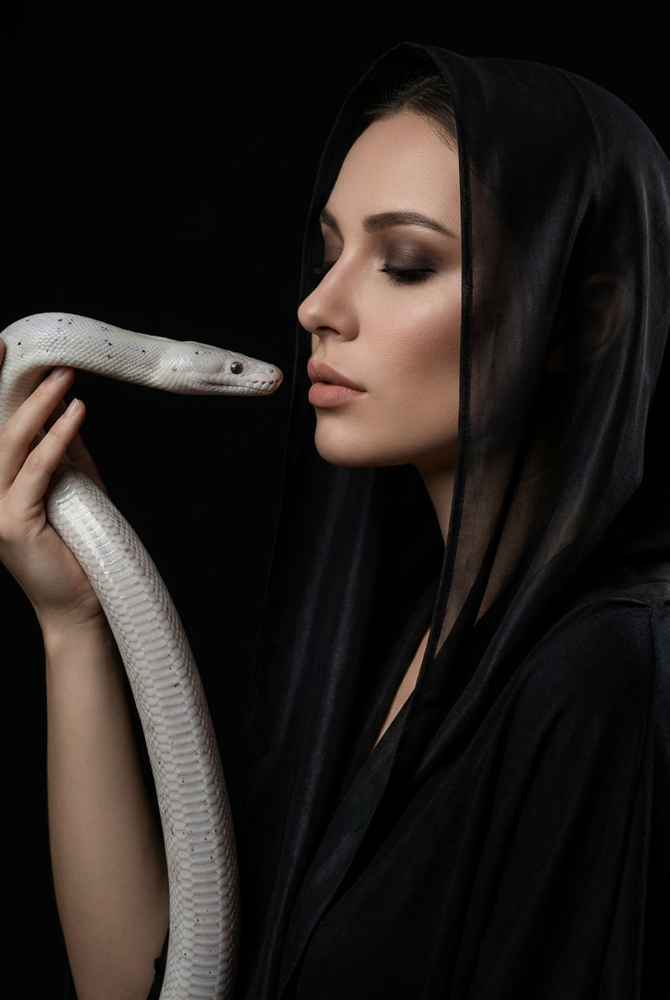
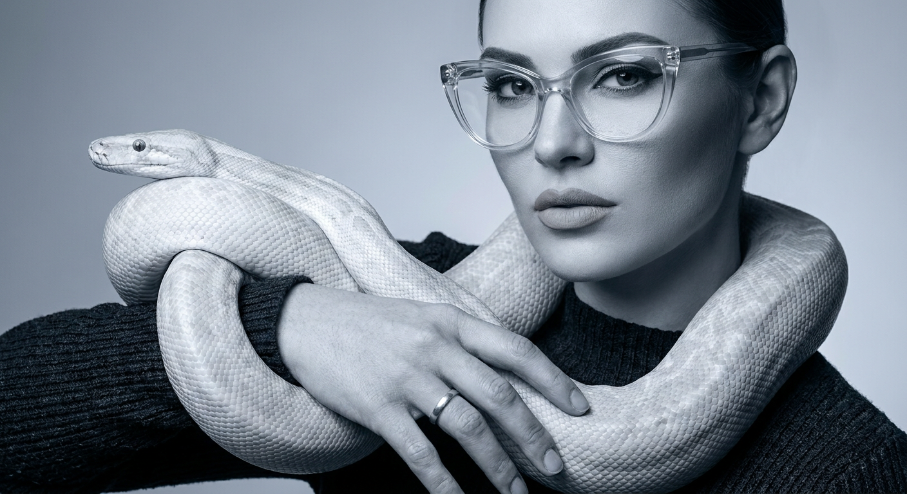
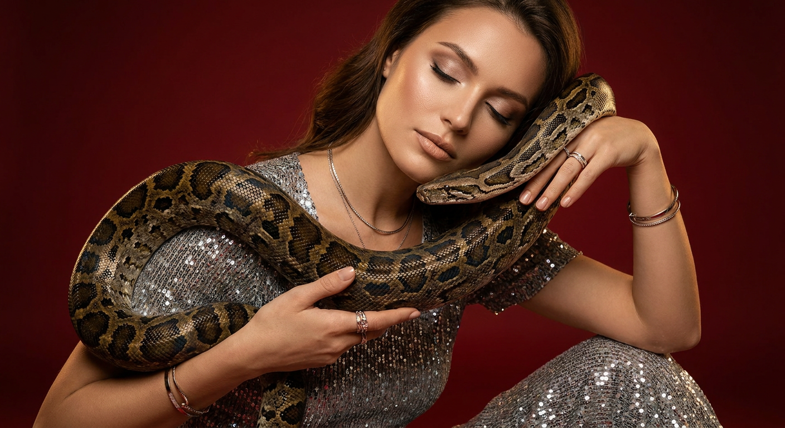
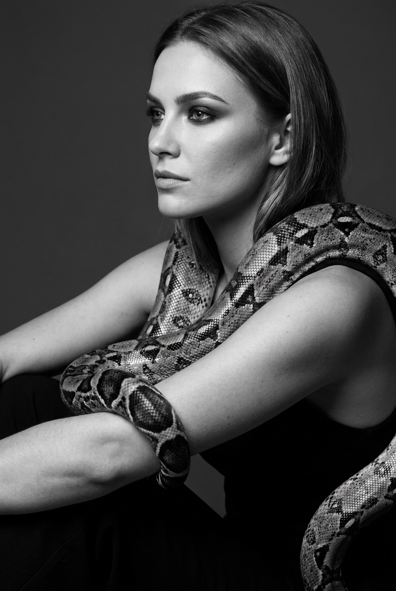
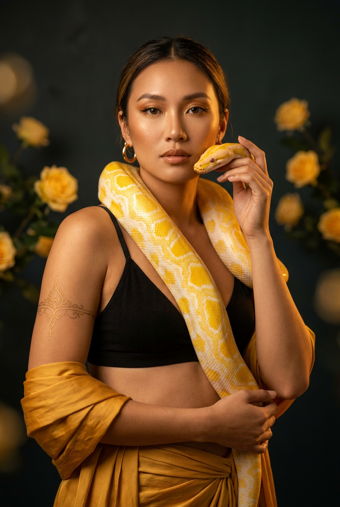
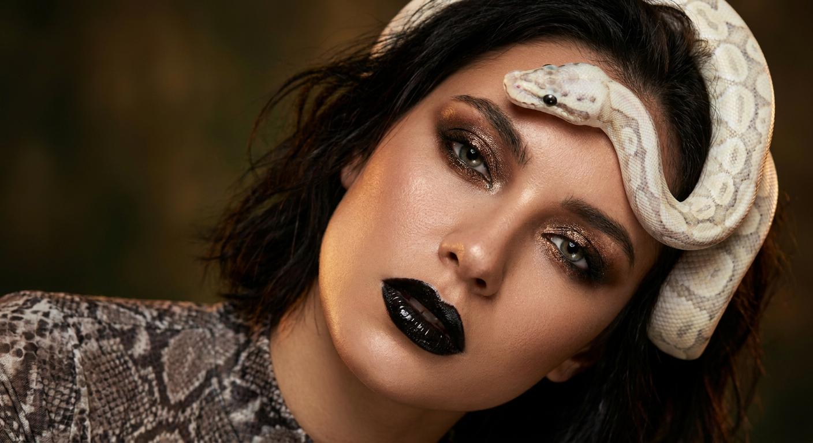
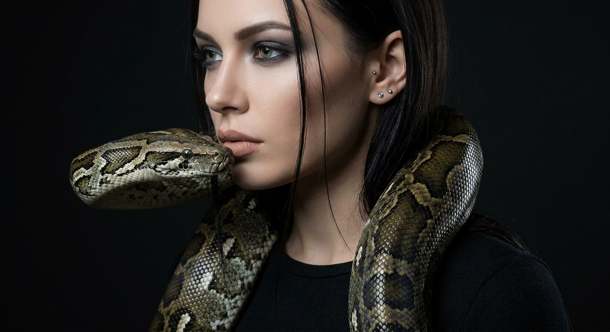
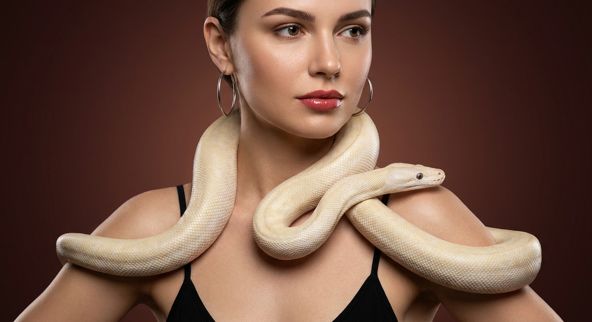
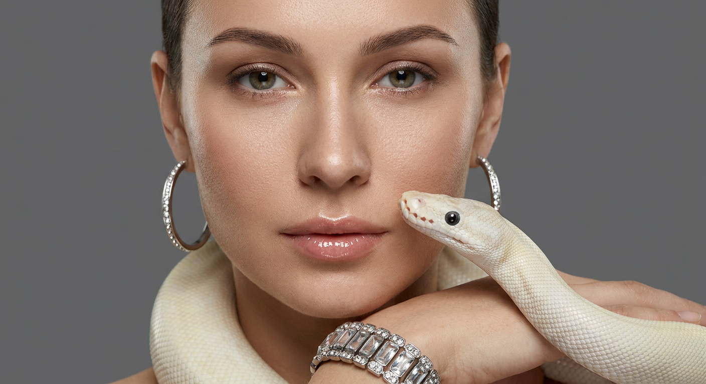
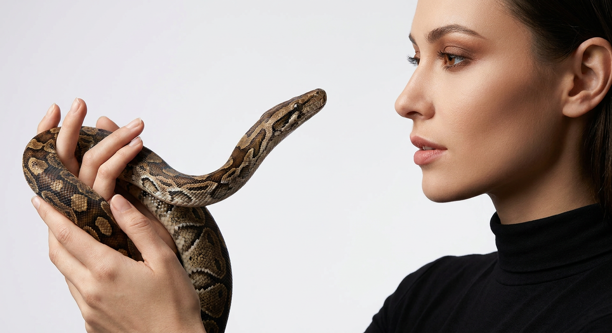

ИИ-фото со змеей: 10 промптов для нейросети

Змея в кадре легко превращается в случайное пятно, игрушечную рептилию или лишнюю пару конечностей. Хороший промпт помогает заранее задать позу модели, рисунок чешуи, направление взгляда, свет и характер снимка.
В подборке — десять готовых сценариев для генерации ИИ-фото: от мрачного профиля и монохромного beauty-портрета до золотого fashion-образа и спокойной змеи, лежащей рядом с лицом. Каждый текст можно использовать как основу и адаптировать под свой референс.
Как сгенерировать такое фото: пошагово
Нужен снимок анфас при ровном свете, лицо в кадре целиком, без тёмных очков и головных уборов. Разрешение от 1000 пикселей по короткой стороне. Чем чётче исходник, тем точнее модель повторит черты.
Выберите сценарий ниже и нажмите «Копировать» — текст уйдёт в буфер целиком, вместе с командой сохранения внешности. Эта команда стоит первой строкой и отвечает за то, чтобы на выходе было ваше лицо, а не случайное.
Кнопка «Сгенерировать» рядом с каждым промптом открывает модель в новой вкладке. Nano Banana Pro работает с референсом лица — в отличие от моделей, которые генерируют портрет с нуля и узнаваемость теряют.
Промпт — в поле ввода, портрет — через загрузку референса. Порядок значения не имеет, но без референса команда сохранения внешности работать не будет: модели нечего сохранять.
Для сторис и ленты берите 9:16, для превью и обложек — 4:3. Первый результат редко идеален: если поза или свет ушли не туда, поправьте соответствующую часть промпта и запустите заново. Обычно хватает двух-трёх итераций.
10 промптов для генерации
1. Темный профиль с капюшоном
Строго сохранить внешность по загруженному референсу: черты лица, пропорции, мимику и текстуру кожи без изменений. Фотореалистичный студийный fashion-портрет в эстетике dark editorial, low-key lighting. Женщина показана в правом профиле, глаза закрыты, губы расслаблены и слегка приоткрыты, выражение лица тихое, задумчивое. На ней свободное черное платье или верх с длинными рукавами, поверх головы лежит черная полупрозрачная накидка, похожая на капюшон или платок. Ткань плотная, гладкая, с натуральными складками и едва заметным блеском. Змея обвивает шею и плечо, ее тело частично скрыто тканью, голова находится рядом с лицом и направлена вперед; рептилия спокойная, без нападения. Максимально реалистичные чешуйки и мягкий влажный блеск глаз. Темный нейтральный фон, один крупный мягкий источник сбоку, глубокие тени, аккуратный контровой свет по силуэту. Естественная текстура кожи без пластикового эффекта, дымчатый макияж в графитово-коричневых оттенках, длинные ресницы, нюдовые матовые губы. Средний телеобъектив 85 мм, f/2.8, вертикальный кадр, высокая детализация.
2. Очки и холодный глянец

Строго сохранить внешность по загруженному референсу: черты лица, пропорции, мимику и текстуру кожи без изменений. Студийная high fashion-съемка в монохромной гамме холодного серого и графитового. Женщина в кадре по пояс, корпус немного развернут влево, лицо обращено к камере, выражение строгое и уверенное, как в beauty-редакционной съемке. На ней минималистичный темный верх — черный или графитовый трикотаж с простой фактурой. Крупные прозрачные очки овальной формы с легким cat-eye-силуэтом сидят ровно; на линзах видны правдоподобные отражения софтбокса, без искажений геометрии. Змея обвивает шею и одно плечо, ее голова расположена у края оправы, направлена в сторону камеры, пасть закрыта. У рептилии четко прорисованы чешуя, объем и естественный блик на глазах. Кожа сохраняет поры и мягкие световые переходы. Макияж контрастный: темные стрелки, smoky eyes, аккуратные брови, матовые или сатиновые губы нюдово-розового оттенка. Серый фон, большой рассеянный источник спереди и слабый боковой контровик. Объектив 70 мм, f/4, вертикальный средний план, фотореализм.
3. Теплый портрет с питоном

Строго сохранить внешность по загруженному референсу: черты лица, пропорции, мимику и текстуру кожи без изменений. Роскошная фотореалистичная fashion-сцена в теплом кинематографичном цвете. Женщина снята вертикально от груди до бедра: она стоит или полусидит, корпус слегка повернут боком, голова наклонена, подбородок немного опущен, глаза закрыты, губы мягко сомкнуты. Обе руки находятся в кадре: одна ладонь поддерживает тело змеи у груди и шеи, вторая осторожно ведет ее по плечу. Пальцы анатомически правильные, без лишних суставов. Змея крупная, питоноподобная, спокойно лежит на плечах и груди; кожа покрыта реалистичными чешуйками с теплым коричнево-золотым рисунком, видны объемные сегменты и естественный блеск. На женщине мягкий макияж с растушеванными тенями, тонкой линией у ресниц, легким сиянием скул и нюдовыми губами. Одежда — темный минималистичный верх, поверх него можно добавить гладкую драпировку. Теплый студийный свет, золотистые блики, глубокий мягкий фон, luxury editorial. Объектив 85 мм, f/3.2, натуральная кожа, высокая детализация.
4. Серебряная змея в ч/б

Строго сохранить внешность по загруженному референсу: черты лица, пропорции, мимику и текстуру кожи без изменений. Контрастный черно-белый beauty-портрет в студии, эстетика high fashion. Женщина сидит на полу и показана в ракурсе три четверти слева, почти со спины; лицо повернуто влево, взгляд направлен чуть мимо камеры. Выражение спокойное, собранное, с легким внутренним напряжением. На коже сохраняется натуральная фактура, ретушь не превращает лицо в пластик. Волосы с мягким блеском, отдельные пряди различимы. Макияж выразительный: растушеванная подводка, дымчатые тени, четкие брови, светлый нейтральный оттенок губ, который в монохроме выглядит мягко и естественно. Главный акцент — светло-серая или серебристо-дымчатая змея, похожая на питона или удава. Она лежит вокруг плеча и шеи, часть тела проходит перед грудью, голова поднята возле лица. Темно-графитовые пятна, мелкий рельеф чешуи, объемная анатомия и реалистичные отражения света обязательны. Черный фон, жесткий боковой источник, светлый контур по змее и лицу. Объектив 100 мм macro, f/5.6, вертикальный кадр, глубокий черно-белый диапазон.
5. Золотая драпировка и питон

Строго сохранить внешность по загруженному референсу: черты лица, пропорции, мимику и текстуру кожи без изменений. Фотореалистичный fashion/editorial-портрет с теплой золотой палитрой. Женщина показана от груди, в образе с черным лифом без откровенной подачи и золотисто-желтой тканью, которая обернута вокруг талии и руки. Материал мягко драпируется, имеет солнечный оттенок и реалистичные складки. На ушах крупные золотые серьги — кольца или подвески. На плече и верхней части груди заметен декоративный золотой орнамент, похожий на филигранную татуировку или вышивку ювелирными линиями. Змея — главный объект кадра: темный питон или удав с насыщенной коричнево-золотой окраской обвивает плечо и часть торса, голова находится рядом с шеей, пасть закрыта. Чешуя прорисована до мелких сегментов, тело объемное, блики естественные. Лицо с четкими бровями, мягкой растушевкой на глазах, длинными ресницами, матовыми нюдово-розовыми губами и живой текстурой кожи. Теплый направленный свет, золотой рефлекс на коже, темный нейтральный фон. Объектив 85 мм, f/2.8, вертикальная журнальная композиция.
6. Черная помада и бронзовый блеск

Строго сохранить внешность по загруженному референсу: черты лица, пропорции, мимику и текстуру кожи без изменений. Кинематографичный close-up fashion beauty-портрета с драматичным макияжем. Женщина лежит или запрокидывает голову назад, лицо направлено вверх и немного в сторону, но глаза смотрят прямо в камеру. Губы слегка приоткрыты, язык не виден. Крупный план показывает естественную текстуру кожи, теплые блики и четкие отражения света в радужке. На веках металлические золотисто-бронзовые тени с заметными микроблестками, плавной растушевкой и темной линией вдоль ресниц; внутренние уголки глаз подчеркнуты. Брови естественные, аккуратно оформленные. Губы покрыты очень темной глянцевой, почти черной помадой с четким контуром и реалистичным зеркальным бликом. Змея проходит рядом с лицом и шеей, ее голова появляется у виска или щеки, тело частично уходит за пределы кадра. Рептилия спокойная, с детальной чешуей, темными глазами и закрытой пастью. Драматичный теплый свет сверху и мягкий красновато-коричневый рефлекс снизу, фон почти черный. Объектив 100 мм, f/2, очень малая глубина резкости, вертикальный close-up.
7. Холодный профиль со змеей

Строго сохранить внешность по загруженному референсу: черты лица, пропорции, мимику и текстуру кожи без изменений. Фотореалистичный beauty/fashion-портрет в стиле dark editorial. Женщина показана в левом профиле и повернута лицом к змее, взгляд опущен вниз, выражение спокойное и внимательное. Волосы блестящие, с хорошо различимыми отдельными прядями. На ушах маленькие серебристые серьги-гвоздики, на плечах и шее — черная лаконичная одежда с плотной фактурой. Змея находится перед лицом: ее голова поднята к носу женщины, но не касается его, корпус плавно изгибается через плечо. Рептилия неагрессивная, пасть закрыта, глаза и мелкие чешуйки переданы с высокой реалистичностью. Макияж холодный: серо-синие и графитовые smoky eyes, аккуратная стрелка, длинные ресницы, тонкая тень под нижним веком, ровный тон кожи с видимой натуральной текстурой и легким контурированием. Губы матовые, нюдово-бежевые или розовато-бежевые, без яркого цвета. Фон темный, свет мягкий, с узкой подсветкой контура волос и змеи. Объектив 85 мм, f/3.5, вертикальный профильный кадр, четкий фокус на лице и голове рептилии.
8. Кремовая змея на плечах

Строго сохранить внешность по загруженному референсу: черты лица, пропорции, мимику и текстуру кожи без изменений. Фотореалистичный студийный портрет женщины со светлой кремово-белой змеей, которая спокойно обвивает шею, плечи и верхнюю часть рук. Рептилия образует плавную S-образную линию, голова опущена к плечу, пасть почти сомкнута, признаков атаки нет. Крупные сегменты тела, микрорельеф чешуи, тонкий градиент от молочного к кремовому и естественные тени должны быть хорошо различимы. Женщина смотрит в камеру с мягким уверенным выражением. На ней черный топ с тонкими бретелями и крупные серебристые серьги. Макияж ухоженный и неброский: аккуратные брови, натуральный тон, легкое сияние кожи, глянцевые красновато-розовые губы. Лицо и кожа выглядят живыми, без чрезмерной ретуши. Композиция напоминает журнальную студийную съемку: светлый нейтральный фон, большой софтбокс спереди, слабый контровой свет отделяет белую змею от фона. Средний план от груди, объектив 70 мм, f/4, высокая резкость на лице и передней части тела рептилии, реалистичные пропорции рук и пальцев.
9. Белый питон у щеки

Строго сохранить внешность по загруженному референсу: черты лица, пропорции, мимику и текстуру кожи без изменений. Очень крупный фотореалистичный портрет женщины, снятый прямо в камеру. Лицо занимает большую часть вертикального кадра, взгляд спокойный и уверенный, кожа сохраняет поры, мягкие световые переходы и натуральную фактуру. Макияж минимальный: тонкие аккуратные брови, мягкий натуральный цвет век, легкий глянец на губах. В кадре видны большая серебристая серьга-хуп с декоративными кристаллами и широкий серебряный браслет с мелкими прозрачными камнями; одна рука или плечо слегка подняты. Молочно-кремовый питон обвивает шею и плечо, его голова мягко лежит рядом со щекой женщины. Между лицом и рептилией нет ощущения нападения: пасть закрыта, взгляд змеи спокойный. На голове питона четко видны мелкие узоры чешуи, сегментация тела и темные глаза, рядом с кожей заметен естественный объемный блик. Свет чистый студийный, фон нейтральный и светлый, без лишних объектов. Объектив 105 мм macro, f/4, резкость на глазах женщины и головы змеи, реалистичные серебряные отражения, вертикальная beauty-композиция.
10. Профиль на светлом фоне

Строго сохранить внешность по загруженному референсу: черты лица, пропорции, мимику и текстуру кожи без изменений. Фотореалистичное студийное fashion-изображение в редакционной эстетике. Женщина показана в правом профиле на нейтральном светлом фоне, губы слегка приоткрыты, выражение лица спокойное и уверенное, взгляд направлен вперед — в сторону змеи. На ней черный однотонный верх с высоким горлом или воротником-стойкой, крой минималистичный. Материал плотный, гладкий, похожий на сатин или креп, без логотипов. Волосы блестят, отдельные пряди прорисованы естественно. Макияж с ровным живым тоном кожи, четкими бровями, длинными ресницами, тонкой стрелкой и теплыми коричнево-бронзовыми тенями. Губы очерчены и покрыты матовой нюдово-розовой помадой. Перед лицом появляется змея: ее голова находится на уровне носа и губ, корпус плавно изгибается вдоль шеи и плеча, пасть закрыта, поза мирная. Чешуя, объем головы, глаза и блики на теле должны выглядеть натурально. Мягкий светлый фон, большой источник справа, легкий контурный свет по профилю и рептилии. Объектив 85 мм, f/3.2, вертикальный кадр, фокус на глазах женщины и голове змеи.
Что важно учесть в этом стиле
Главный элемент таких кадров — не сама змея, а ее контакт с моделью. Поэтому в промпте лучше отдельно описывать положение головы, изгиб тела, направление взгляда и состояние пасти. Формулировки «спокойная», «неагрессивная», «пасть закрыта» помогают убрать ощущение сцены нападения.
Реализм создают мелкие признаки: рельеф отдельных чешуек, мягкие блики на коже, поры, естественные складки ткани и отражения в очках или украшениях. Для портрета достаточно указать объектив 85–105 мм, а для фактуры змеи можно добавить macro-фокус и резкость на голове рептилии. Если модель и змея выглядят размыто, разделите зоны резкости и уберите лишние детали из фона.
Идеи для вариаций
- Замените студийный фон на черный бархат, бетонную стену или дымчатую серую циклораму.
- Попробуйте альбиноса, зеленого древесного питона, темного удава или змею с графитовым геометричным рисунком.
- Добавьте прозрачную вуаль, кожаные перчатки, металлический воротник или длинные серьги.
- Смените настроение: спокойный взгляд, закрытые глаза, напряженная поза или почти скульптурная неподвижность.
- Для серии кадров используйте один свет, но меняйте фокусное расстояние: 50 мм для среды, 85 мм для портрета и 105 мм для чешуи.
Как собрать свой промпт
Сначала задайте формат: портрет, средний план или кадр по пояс. Затем опишите позу женщины и змеи, их взаимное расстояние, выражение лица и направление взгляда. После этого добавьте одежду, макияж, украшения и фон. Такой порядок снижает вероятность того, что нейросеть потеряет главный объект.
В финале укажите свет и технические параметры: например, «объектив 85 мм, f/2.8, вертикальный кадр, мягкий боковой софтбокс, высокая детализация». Если нужен референс лица, добавьте его отдельно через инструмент изображения и проверьте, поддерживает ли выбранная модель точное сходство. Для сложной сцены закладывайте 4–8 генераций: первые попытки часто требуют исправления рук, очков или положения головы змеи.
Ошибки, из-за которых кадр не получается
- Слишком много главных объектов. Когда одновременно заданы сложный фон, несколько украшений и две змеи, модель теряет композицию. Оставьте одну рептилию и один визуальный акцент.
- Не описана анатомия контакта. Уточняйте, где лежит тело змеи и что поддерживает рука, иначе появятся лишние кольца, пальцы или неестественные изгибы.
- Нет указания на спокойное поведение. Слова «пасть закрыта», «неагрессивная» и «мягко лежит на плече» лучше добавлять явно.
- Глянцевая пластиковая кожа. Используйте «поры», «естественная текстура», «мягкие блики» и запрет на чрезмерную ретушь.
- Слабая работа со светом. Назначьте основной источник, направление теней и контровой свет, иначе змея сольется с одеждой или фоном.
Частые вопросы
Как сделать такое ИИ-фото бесплатно?
Для первых попыток подойдут Kandinsky и Шедеврум: они позволяют генерировать изображения без оплаты, но могут ограничивать число попыток, детализацию и точность сложных сцен. В Krea AI и Arena.ai доступны бесплатные режимы, однако условия меняются, а генерация по референсу лица может работать нестабильно или быть ограничена. Бесплатные модели часто ошибаются в руках, очках и чешуе, поэтому результат придется перегенерировать.
Как сохранить сходство лица с референсом?
Загрузите четкий портрет без сильного макияжа, поворота головы и перекрывающих лицо волос. В промпте не описывайте новые черты, а задайте только свет, позу и образ. Для точного сходства используйте режим reference image или image-to-image и не поднимайте силу стилизации слишком высоко.
Как сделать змею реалистичной, а не игрушечной?
Опишите вид или тип рептилии, размер, рисунок чешуи, объем тела, положение головы и источник бликов. Добавьте слова «детализированный микрорельеф чешуи», «естественная анатомия», «закрытая пасть» и укажите фокус на голове змеи. Пластиковый вид часто появляется из-за слишком яркого равномерного света.
Что делать, если нейросеть искажает руки или украшения?
Упростите сцену и оставьте в кадре одну руку, одно украшение или меньше мелких деталей. Уточните число пальцев, естественные пропорции кисти и правильную геометрию серег или очков. После первой генерации можно отдельно исправить проблемную область через режим дорисовки, а не менять весь промпт.